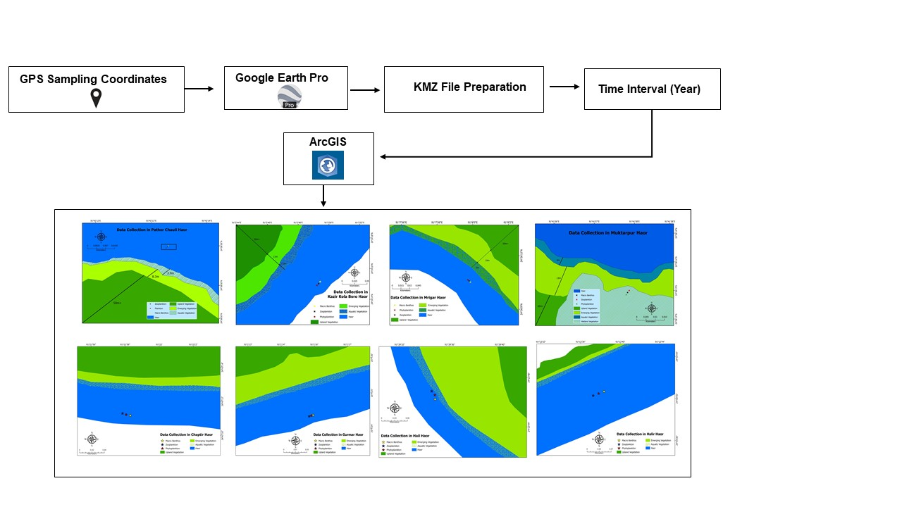
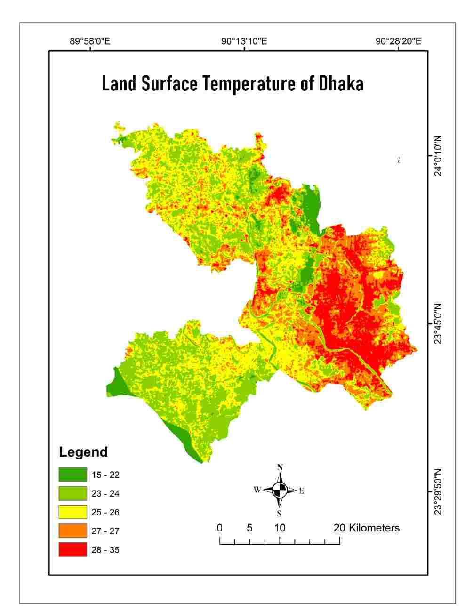
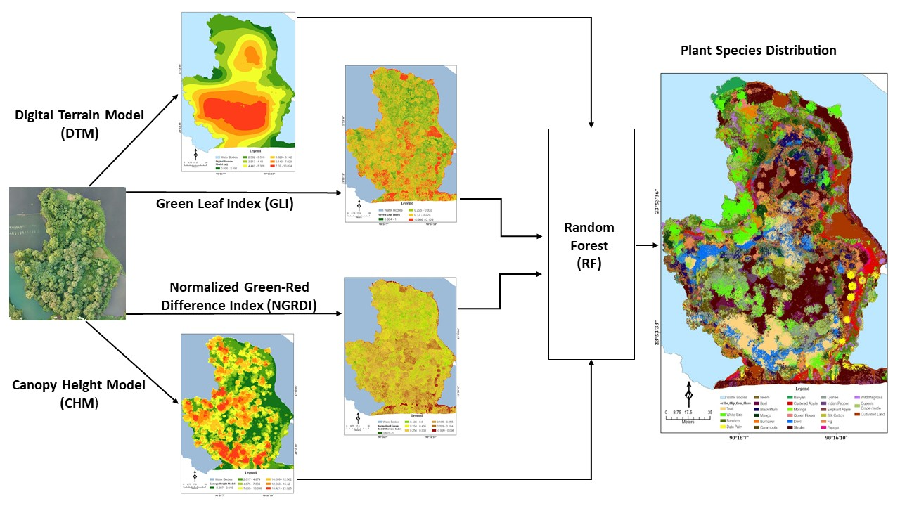
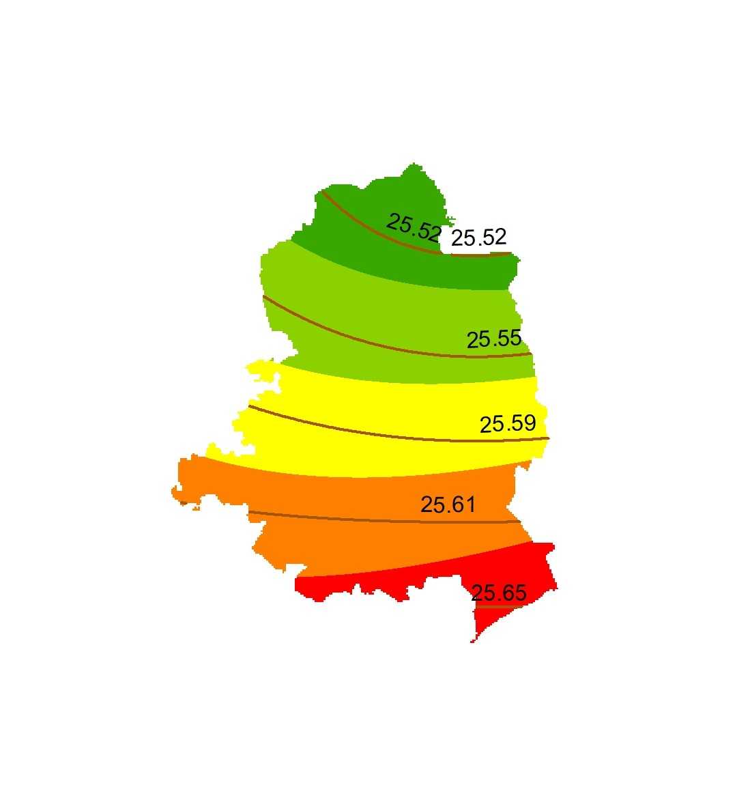
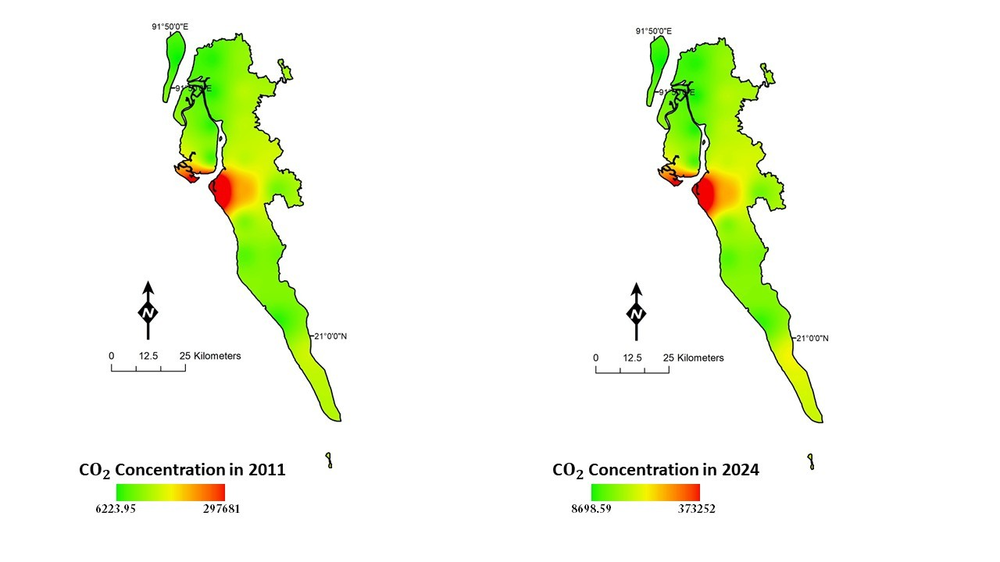
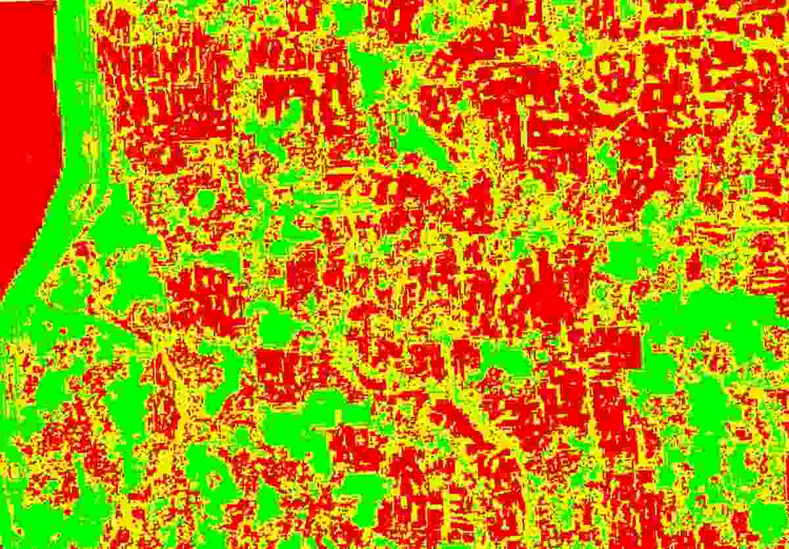
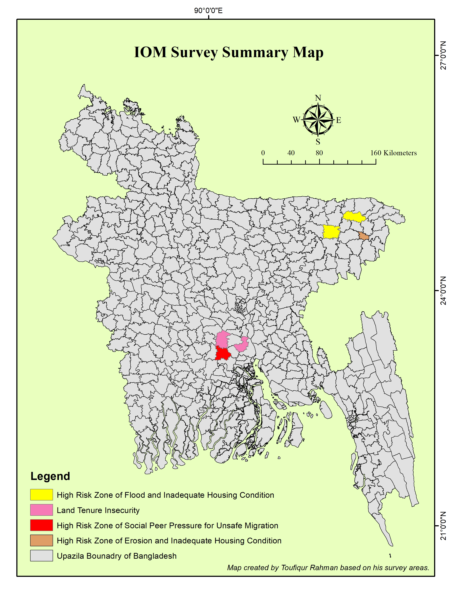

Land-use / Land-cover Mapping
GIS-based mapping to communicate land-use patterns and support geographic analysis.
GEOSPATIAL DATA ANALYST · GEOGRAPHER
Geospatial Data Analyst · Geographer
I am a geographer and GIS professional working across spatial data production, remote sensing, environmental analysis, and field-based research. My experience includes UAV-based 3D digitization, spatial QA/QC, climate-risk mapping, and geospatial research.
01 / ABOUT
I am a geographer and GIS professional with experience across academic research and applied development projects. My work combines GIS, remote sensing, spatial analysis, field-based research, and scientific communication.
My professional experience includes geospatial data production for the Urban Development Directorate (UDD) project, field research with the International Organization for Migration (IOM), and wetland ecosystem mapping under a UNDP-funded flood and haor resilience project.
02 / PORTFOLIO
Selected GIS maps, remote-sensing analyses, research outputs, and fieldwork from my geospatial portfolio.
GIS-based mapping to communicate land-use patterns and support geographic analysis.

Geospatial data development and wetland ecosystem mapping connected to a UNDP-funded project.
Spatial analysis of historical earthquake information to explore geographic patterns.

Satellite-derived temperature mapping to examine the spatial distribution of surface heat.
Vegetation index analysis to examine the distribution of vegetation across Dhaka.

Species-distribution research combining geographic information and environmental analysis.

Climate data visualization to explore spatial temperature variation.

Mapping EDGAR CO₂ emission-flux data to explore its spatial distribution.

Index-based spatial analysis of salinity for Shilkhali, Cox's Bazar.
A GIS map illustrating the spatial distribution of hospital locations in Dhaka.

Geospatial work associated with migration patterns and community vulnerability assessment.
03 / EXPERTISE
Tools and methods I use to turn geographic data into useful information.
Spatial editing, digitization, map design, geoprocessing, and spatial validation.
Satellite-image interpretation, vegetation indices, LST, and land-cover analysis.
Geometry and attribute checks, geo-matching, edge-matching, and error documentation.
Environmental mapping, field data collection, climate analysis, and scientific reporting.
04 / GROUND TRUTH
Selected field activities, environmental surveys, mapping, and verification.
05 / CAREER
Applied GIS, field research, and interdisciplinary project experience.
MAY 2026 – PRESENT
Sheltech Consultants (Pvt.) Ltd. · Dhaka, Bangladesh
FEBRUARY 2026 – APRIL 2026
IOM – International Organization for Migration
Sylhet, Sunamganj, Faridpur, Shariatpur, and Madaripur, Bangladesh
MAY 2025 – DECEMBER 2025
UNDP-Funded Flood and Haor Resilience Project
Sylhet, Sunamganj, and Kishoreganj, Bangladesh
06 / ACADEMICS
My academic training in geography and environment at Jahangirnagar University.
EXAMINATIONS COMPLETED · JULY 2026
Jahangirnagar University
Savar, Dhaka, BangladeshMARCH 2020 – AUGUST 2025
Jahangirnagar University
Savar, Dhaka, Bangladesh · CGPA: 3.60 / 4.00RESEARCH EXPERIENCE
Department of Geography and Environment, Jahangirnagar University
April 2023 – August 2025Processed multi-temporal satellite imagery for land-use and land-cover change, NDVI, and coastal climate analysis. Applied MaxEnt, Random Forest, RNN-LSTM, and CA-Markov methods, and analyzed climate datasets including IBTrACS and ERA5.
Co-authored four peer-reviewed journal articles.
07 / PUBLICATIONS
Academic papers and research documents. Open a PDF or download a copy.
Research paper PDF.
View PDF ↗ · Download PDF ↓Research paper PDF.
View PDF ↗ · Download PDF ↓08 / GET IN TOUCH
I welcome conversations about GIS projects, geospatial research, collaboration, and professional opportunities.